The American Hotel, 49 Main Street, Sag Harbor: A Grand Time-Traveling Adventure!
Three Centuries at 49 Main Street, for young readers
Every previously italicized phrase is highlighted and colour-coded by source. Where the source page is on file, clicking the highlight opens the scan.
- Sleight, Sag Harbor in Earlier Days, 1997 pp. 150, 37, 48 (12) ⌕
- Weisburg & Donneson, Guide To Sag Harbor, 1975 pp. 56, 45 (3) ⌕
- Zaykowski, Sag Harbor: The Story of an American Beauty, 1991 pp. 196, 58, 59, 120, 121, 268 (12) ⌕
- Studenroth, Preserving Sag Harbor, 2023 pp. 35, 34 (9) ⌕
- Hedges, Early Sag Harbor, 1896 pp. 21, 22 (4) ⌕
- Roth, Images of America Sag Harbor, 2018 pp. 32, 20 (6) ⌕
- Eames, Oh That's Another Story, 2015 pp. 61, 63, 54 (14) ⌕
- Tobier, Voices of Sag Harbor, 2007 p. 271 (2) ⌕
- Longmire, Keeping Time in Sag Harbor, 2007 p. 142 (1) ⌕
- Tice, Sag Harbor Chamber of Commerce Visitors Guide, 2022 p. 12 (2) ⌕
I. Once Upon a Time at the Sandy Landing
Grab your explorer's hat and buckle up, because we're about to zoom WAY back in time! Imagine a teeny-tiny village sitting right next to a sparkling, splashy bay. Only a few brave families had settled there, and one of them planted their roots on the exact same spot where the American Hotel stands today. One of those early neighbors was James Howell (site of American Hotel). How cool is that?
The big important fellow who lived here was one of the early settlers of Southampton and among the first men to locate in Sag Harbor, about 100 years after the original laying out and occupation of the township. James lived a nice long life, way back in the old, old days — he was born at Southampton, L. I., October 15, 1734 and there he died December 12, 1808.
And guess what? James owned a HUGE chunk of land! He owned and resided on site of the property now occupied by the American Hotel and Jetter block, plus grassy meadows stretching down the west side of Main Street. This spot has a super-old story, because James Howell kept tavern where the American House now is, and His child is the first interment at Old Burying Ground, Madison street, opened 1767. History buffs even say this was probably one of the earliest inhabited locations in Sag Harbor.
II. The Cozy Inn of 1730 and the Sneaky Nighttime Mission!
James built himself a cozy little inn that was Built in 1730, standing on the east side of Main Street, the present American Hotel. The people who protect old buildings tell us it was Sag Harbor's earliest known inn, which was built ca. 1730 and figured later in the Revolutionary War.
Now here comes the exciting part, with soldiers and secret missions! During the big war, enemy soldiers from Britain marched right into town and picked the nicest spot to stay. Officers were quartered in the house and tavern of James Howell, which stood on the site of the present American Hotel. Here they were close enough to have full view of their vessels anchored in the harbor. That was no fun at all for the family, and James's daughter — whose daughter, Mrs. Abigail Price, remembered their capture by Meigs' Expedition in May, 1777 — never forgot it.
Then — tiptoe, tiptoe, shhh! — in the dark of night, a brave American hero named Colonel Meigs snuck into the village with his team. They marched straight for the inn, and the officers at James Howell's were captured, the fort was Surprised, and the garrison taken. Can you even believe it? They caught the enemy's top commander where the British commanding officer had been staying. There he was arrested as he lay in his bed! It really happened, because Col. Meigs, in his expedition to Sag Harbor, during the Revolutionary war (1777) took the British commander a prisoner from his quarters, at the Howell dwelling, the site of the American Hotel.
When the big enemy ships started going BOOM-BOOM-BOOM with their cannons, James did the bravest, most loving thing to keep his little girl safe. Then James Howell put his daughter, afterwards Mrs. Abigail Price, in his cellar for safety. This circumstance she, with others, vividly remembered.
Here's a funny little twist, though — James wasn't even cheering for the American team! He was a Tory in those days, like most of his neighbors who subscribed to the oath of allegiance to the King. But no matter what, everybody always remembered his inn, where stands the American Hotel. The story stuck around for ages and ages: James Howell kept a tavern during the Revolution at the site of the present American Hotel. British officers lived there.
III. The Coffee House and the Great Big Fire!
Flip the calendar way forward, and the place got a brand-new name and a brand-new job! Its name was changed to Eldredge's Coffee House in the early 1800s. And listen to this wild tale — its cellar was said to be of holding 1000 barrels of liquor, and it was the gathering place of the old military group , the Suffolk Guards , and assemble there when parades were held in the village.
But then — oh no! — a great big fire came roaring through. The devastating fire of 1845 burned Howell's Inn to the ground.
IV. Nathan Tinker and the Amazing Brick Building That Rose From the Ashes!
But don't be sad — because just like a phoenix flapping its fiery wings, a brand-new building rose up from the ashes! The clever builder was a man who made the most beautiful furniture you ever saw. From 1825 until the fire of 1845, Nathan Tinker had his cabinetmaking shop on this site. After the fire he decided to build a residence here. The American Hotel, completed in 1846, was originally a two-family home, split down the middle, for Tinker and his son. In 1876 it was converted into a hotel, which it remains. Nathan was a Sag Harbor boy, born in 1792, grew up in Sag Harbor and married Hannah P. Woodward. He built the whole thing out of strong bricks, since Cabinetmaker Nathan Tinker constructed the brick building on the site for his business and residence, all in a fancy, pretty style — rebuilt in brick in the Italianate style by Sag Harbor's furniture maker, Nathan Tinker.
Even though the fire made a big mess, clever Mr. Tinker turned his frown upside down. Although his brick building survived the blaze, much of its contents were damaged. Tinker took advantage of the situation by selling $2000 worth of new merchandise at greatly reduced prices. He teamed up with family, because Following the fire, Tinker made his son Samuel a partner. They renovated the store and added a large brick structure that today is the American Hotel. Mr. Tinker worked hard his whole life, and Nathan Tinker remained in the furniture making business for twenty-nine years, and in 1847 at the age of 55, he passed away. He is buried in Oakland Cemetery.
V. Ta-Da! The American Hotel is Born!
Now for the big moment — when the building became a REAL, TRUE hotel with a real, true name! In 1877 Addison Youngs sold his Bridgehampton farm and bought The American Hotel with his father-in-law and partner William Freeman. They gave it all the fanciest new gizmos, because they bought the building and opened the American Hotel, offering such modern conveniences as electric lights and indoor plumbing. It wasn't a furniture store anymore — The Tinker stores became the American Hotel, in 1877-8. They even added land out back where stables for their visitors . The following year the veranda on the hotel was built by Josiah Smith.
And now for the SILLIEST, most WHALE-sized story of all! Back In 1888, entrepreneurs Addison Youngs, founder of the American Hotel, and Edwin Rogers, of Bridgehampton, embalmed a whale for exhibition. Their 100-foot "Prince of Whales" traveled the East Coast and west to Chicago. Admission was 25¢ for adults and 15¢ for children. Sightseers posed in the whale's mouth, emulating Jonah. It was super smelly, too, but The smell was a free advertisement, said Youngs. Yuck and wow at the same time!
VI. One Big Happy Family for a Hundred Years!
For almost a whole hundred years, one special family lived upstairs and ran the hotel downstairs — how cozy is that? As was the custom, the owner-proprietors and their families lived upstairs. The hotel was operated for decades by Addison Youngs' descendants until William F. Youngs, the last owner, died in 1970. Back in the busy factory days, the hotel was the only place in town where traveling salesmen could have a good dinner, a bath, and a clean room for the night for $2.25. And every now and then, Sometimes a drunk would sneak in through the back door, go upstairs and find a bed for a night" But on the whole it was a respectable place.
A boy named Jack Youngs had the most fun growing up there — zoom, zoom, zoom! The family spent cozy evenings in the front parlor, and he remembered, I had a scooter and rode through the rooms after dinner". But when he moved up to the tippy-top floor, ooooh — Later, when he was a bit older, Jack lived on the third floor of the hotel. Asked how it was, he answered, "Scary!".
The hotel was clever and rolled with the times. When the town went dry, The bar was removed and billiard tables set up in its place. Soft drinks were sold throughout the dry years. And when a super-powerful windstorm whooshed through in 1938, Roofs were blown off the Post Office, hardware store, American Hotel, and grain company! Through it all, it stayed a landmark everyone knew — It had two hotels: the American Hotel (still at its original site). And up in the dusty attic, somebody once found a real treasure — A map of the period 1850, showing Sag Harbor in whaling years... It was found in the Hotel garret!
Then, after all those happy years, it was time to say goodbye. The hotel remained in their family for almost a hundred years. When Jack's grandfather Will died in 1970 at 94, the family put the hotel up for sale.
VII. A Brave Young Dreamer Named Ted!
Here comes the part where a young hero shows up with BIG, bold dreams! On a freezing cold day, the family met a very young looking twenty-four year old Ted Conklin. And wow, did his imagination go zippity-zoom! As Jack remembered it, Ted's eyes are looking and his mind is going off ... Ted says, "We can do this, we can do that, we can move this over there", and everybody thought, this guy is crazy, Man. It's 1972, it's a blue-collar town... Who is going to come to this place?.
The town really was having a tough time, because Three major factories closed between 1 970 and 1972 throwing out of work over a thousand people... Main Street's businesses closed by the dozens. Store windows were boarded .... But Ted had a clear dream — providing reasonably priced meals and lodging in a civil atmosphere with the backdrop of a historic property. He may have been young, but he had less experience operating eating establishments than he had the vision, drive and intuition to realize what The American Hotel could become someday.
And then — hooray! — his big dream came true! Ted rolled up his sleeves and fixed up the entire hotel. Period wallpapers, antique furniture, an awardwinning wine cellar and the hotel quickly became the place to go for drinks and dinner. Today, The hotel continues to be a destination at the center of Sag Harbor's Main Street and is still owned by the original Ted Conklin. It even earned a gold-star honor, because The American Hotel was designated a village landmark - one of 13 - by the Sag Harbor Historic Preservation Commission in 1975. People say that If any village building or business represents the hard work and dedication that often underlies the real story of a successful preservation project, it is The American Hotel.
VIII. The Little Flower Shop by the Front Porch!
And don't forget the sweet little shop tucked right beside the hotel, bursting with pretty petals! To the left of the front porch of the hotel is a little shop that has housed many different businesses. For many years it was Carruther's Florist, where you could get fresh flowers from Ency Beyer and her mother, Mrs. Carruthers. It was teensy, because Mrs. Carruthers, had a flower shop right in a part of the American Hotel on the left there... she didn't have enough room there and didn't grow things. And here's a neat bonus — the flower lady grew up to have a big job, since Ency Carruthers Beyer... served as village clerk as an adult and owned Carruthers Florist next to the American Hotel!
IX. Happily Ever After!
And here we are, at the very end of our time-traveling adventure! This amazing building has stood strong and proud for hundreds of years, and despite the fires, the general look of downtown defined by the American Hotel and Municipal Building is largely unchanged. Even famous storytellers love to pop in — The late Lanford Wilson, playwright, was seen often heading on foot for the library or his favorite watering hole, The American Hotel. And today, it welcomes everyone as an elegant and professionally run establishment with an inimitable character, standing proudly at 49 Main Street, Sag Harbor — the very same spot where, almost three hundred years ago, a long-ago innkeeper first lit a warm and glowing fire. **The End!**
Citation Chart
Every highlighted quote, in order of appearance, correlated to its underlying source. The swatch matches the highlight colour in the text.
I. Once Upon a Time at the Sandy Landing
| # | Verbatim Quote (abbreviated) | Source (Author, Title, Year, Page) |
|---|---|---|
| 1 | “James Howell (site of American Hotel)” | Sleight, Sag Harbor in Earlier Days, 1997, p. 150 [page scan] |
| 2 | “one of the early settlers of Southampton and among the first men to locate in Sag Harbor, about 100 years after the original laying out and occupation of the…” | Sleight, Sag Harbor in Earlier Days, 1997, p. 37 [page scan] |
| 3 | “was born at Southampton, L. I., October 15, 1734” | Sleight, Sag Harbor in Earlier Days, 1997, p. 37 [page scan] |
| 4 | “there he died December 12, 1808” | Sleight, Sag Harbor in Earlier Days, 1997, p. 37 [page scan] |
| 5 | “owned and resided on site of the property now occupied by the American Hotel and Jetter block” | Sleight, Sag Harbor in Earlier Days, 1997, p. 37 [page scan] |
| 6 | “James Howell kept tavern where the American House now is” | Sleight, Sag Harbor in Earlier Days, 1997, p. 48 [page scan] |
| 7 | “His child is the first interment at Old Burying Ground, Madison street, opened 1767” | Sleight, Sag Harbor in Earlier Days, 1997, p. 48 [page scan] |
| 8 | “this was probably one of the earliest inhabited locations in Sag Harbor” | Weisburg & Donneson, Guide To Sag Harbor, 1975, p. 56 [page scan] |
II. The Cozy Inn of 1730 and the Sneaky Nighttime Mission!
| # | Verbatim Quote (abbreviated) | Source (Author, Title, Year, Page) |
|---|---|---|
| 9 | “Built in 1730” | Zaykowski, Sag Harbor: The Story of an American Beauty, 1991, p. 196 [page scan] |
| 10 | “on the east side of Main Stre[illegible] the present American Hotel” | Zaykowski, Sag Harbor: The Story of an American Beauty, 1991, p. 196 [page scan] |
| 11 | “Sag Harbor's earliest known inn, which was built ca. 1730 and figured later in the Revolutionary War” | Studenroth, Preserving Sag Harbor, 2023, p. 35 [page scan] |
| 12 | “Officers were quartered in the house and tavern of James Howell, which stood on the site of the present American Hotel. Here they were close enough to have f…” | Zaykowski, Sag Harbor: The Story of an American Beauty, 1991, p. 58 [page scan] |
| 13 | “whose daughter, Mrs. Abigail Price, remembered their capture by Meigs' Expedition in May, 1777” | Hedges, Early Sag Harbor, 1896, p. 21 [page scan] |
| 14 | “the officers at James Howell's were captured, the fort was Surprised, and the garrison taken” | Hedges, Early Sag Harbor, 1896 |
| 15 | “where the British commanding officer had been staying. There he was arrested as he lay in his bed” | Zaykowski, Sag Harbor: The Story of an American Beauty, 1991, p. 59 [page scan] |
| 16 | “Col. Meigs, in his expedition to Sag Harbor, during the Revolutionary war (1777) took the British commander a prisoner from his quarters, at the Howell dwell…” | Sleight, Sag Harbor in Earlier Days, 1997, p. 37 [page scan] |
| 17 | “Then James Howell put his daughter, afterwards Mrs. Abigail Price, in his cellar for safety. This circumstance she, with others, vividly remembered” | Hedges, Early Sag Harbor, 1896, p. 22 [page scan] |
| 18 | “was a Tory in those days, like most of his neighbors who subscribed to the oath of allegiance to the King” | Sleight, Sag Harbor in Earlier Days, 1997, p. 37 [page scan] |
| 19 | “where stands the American Hotel” | Hedges, Early Sag Harbor, 1896 |
| 20 | “James Howell kept a tavern during the Revolution at the site of the present American Hotel. British officers lived there” | Sleight, Sag Harbor in Earlier Days, 1997 |
III. The Coffee House and the Great Big Fire!
| # | Verbatim Quote (abbreviated) | Source (Author, Title, Year, Page) |
|---|---|---|
| 21 | “Its name was changed to Eldredge's Coffee House in the early 1800s” | Studenroth, Preserving Sag Harbor, 2023, p. 35 [page scan] |
| 22 | “of holding 1000 barrels of liquor” | Zaykowski, Sag Harbor: The Story of an American Beauty, 1991, p. 196 [page scan] |
| 23 | “place of the old military group , the Suffolk Guards , and assemble there when parades were held in the village” | Zaykowski, Sag Harbor: The Story of an American Beauty, 1991, p. 196 [page scan] |
| 24 | “The devastating fire of 1845 burned Howell's Inn to the ground” | Roth, Images of America Sag Harbor, 2018, p. 32 [page scan] |
IV. Nathan Tinker and the Amazing Brick Building That Rose From the Ashes!
| # | Verbatim Quote (abbreviated) | Source (Author, Title, Year, Page) |
|---|---|---|
| 25 | “From 1825 until the fire of 1845, Nathan Tinker had his cabinetmaking shop on this site. After the fire he decided to build a residence here. The American Ho…” | Weisburg & Donneson, Guide To Sag Harbor, 1975, p. 56 [page scan] |
| 26 | “born in 1792, grew up in Sag Harbor and married Hannah P. Woodward” | Zaykowski, Sag Harbor: The Story of an American Beauty, 1991, p. 120 [page scan] |
| 27 | “Cabinetmaker Nathan Tinker constructed the brick building on the site for his business and residence” | Roth, Images of America Sag Harbor, 2018, p. 32 [page scan] |
| 28 | “rebuilt in brick in the Italianate style by Sag Harbor's furniture maker, Nathan Tinker” | Studenroth, Preserving Sag Harbor, 2023, p. 35 [page scan] |
| 29 | “Although his brick building survived the blaze, much of its contents were damaged. Tinker took advantage of the situation by selling $2000 worth of new merch…” | Zaykowski, Sag Harbor: The Story of an American Beauty, 1991, p. 121 [page scan] |
| 30 | “Following the fire, Tinker made his son Samuel a partner. They renovated the store and added a large brick structure that today is the American Hotel” | Zaykowski, Sag Harbor: The Story of an American Beauty, 1991, p. 121 [page scan] |
| 31 | “Nathan Tinker remained in the furniture making business for twenty-nine years, and in 1847 at the age of 55, he passed away. He is buried in Oakland Cemetery” | Zaykowski, Sag Harbor: The Story of an American Beauty, 1991, p. 121 [page scan] |
V. Ta-Da! The American Hotel is Born!
| # | Verbatim Quote (abbreviated) | Source (Author, Title, Year, Page) |
|---|---|---|
| 32 | “In 1877 Addison Youngs sold his Bridgehampton farm and bought The American Hotel with his father-in-law and partner William Freeman” | Eames, Oh That's Another Story, 2015, p. 61 [page scan] |
| 33 | “bought the building and opened the American Hotel, offering such modern conveniences as electric lights and indoor plumbing” | Roth, Images of America Sag Harbor, 2018, p. 32 [page scan] |
| 34 | “The Tinker stores became the American Hotel, in 1877-8” | Sleight, Sag Harbor in Earlier Days, 1997 |
| 35 | “stables for their visitors . The following year the veranda on [illegible] hotel was built by Josiah Smith” | Zaykowski, Sag Harbor: The Story of an American Beauty, 1991, p. 196 [page scan] |
| 36 | “"In 1888, entrepreneurs Addison Youngs, founder of the American Hotel, and Edwin Rogers, of Bridgehampton, embalmed a whale for exhibition. Their 100-foot ""…” | Roth, Images of America Sag Harbor, 2018, p. 20 [page scan] |
| 37 | “The smell was a free advertisement, said Youngs” | Roth, Images of America Sag Harbor, 2018, p. 20 [page scan] |
VI. One Big Happy Family for a Hundred Years!
| # | Verbatim Quote (abbreviated) | Source (Author, Title, Year, Page) |
|---|---|---|
| 38 | “As was the custom, the owner-proprietors and their families lived upstairs. The hotel was operated for decades by Addison Youngs' descendants until William F…” | Studenroth, Preserving Sag Harbor, 2023, p. 35 [page scan] |
| 39 | “the hotel was the only place in town where traveling salesmen could have a good dinner, a bath, and a clean room for the night for $2.25” | Eames, Oh That's Another Story, 2015, p. 61 [page scan] |
| 40 | “Sometimes a drunk would sneak in through the back door, go upstairs and find a bed for a night:' But on the whole it was a respectable place” | Eames, Oh That's Another Story, 2015, p. 61 [page scan] |
| 41 | “I had a scooter and rode through the rooms after dinner:'” | Eames, Oh That's Another Story, 2015, p. 61 [page scan] |
| 42 | “Later, when he was a bit older, Jack lived on the third floor of the hotel. Asked how it was, he answered, 'Scary!'” | Eames, Oh That's Another Story, 2015, p. 61 [page scan] |
| 43 | “The bar was removed and billiard tables set up in its place. Soft drinks were sold throughout the dry years” | Zaykowski, Sag Harbor: The Story of an American Beauty, 1991, p. 268 [page scan] |
| 44 | “Roofs were blown off the Post Office, hardware store, American Hotel, and grain company” | Weisburg & Donneson, Guide To Sag Harbor, 1975, p. 45 [page scan] |
| 45 | “It had two hotels: the American Hotel (still at its original site)” | Tobier, Voices of Sag Harbor, 2007 |
| 46 | “A map of the period 1850, showing Sag Harbor in whaling years... It was found in the Hotel garret” | Sleight, Sag Harbor in Earlier Days, 1997 |
| 47 | “The hotel remained in their family for almost a hundred years. When Jack's grandfather Will died in 1970 at 94, the family put the hotel up for sale” | Eames, Oh That's Another Story, 2015, p. 63 [page scan] |
VII. A Brave Young Dreamer Named Ted!
| # | Verbatim Quote (abbreviated) | Source (Author, Title, Year, Page) |
|---|---|---|
| 48 | “a very young looking twenty-four year old Ted Conklin” | Eames, Oh That's Another Story, 2015, p. 63 [page scan] |
| 49 | “"Ted's eyes are looking and his mind is going off ... Ted says, ""We can do this, we can do that, we can move this over there:'"” | Eames, Oh That's Another Story, 2015, p. 63 [page scan] |
| 50 | “this guy is crazy, Man. It's 1972, it's a blue-collar town... Who is going to come to this place?” | Eames, Oh That's Another Story, 2015, p. 63 [page scan] |
| 51 | “Three major factories closed between 1 970 and 1972 throwing out of work over a thousand people... Main Street's businesses closed by the dozens. Store windo…” | Studenroth, Preserving Sag Harbor, 2023, p. 34 [page scan] |
| 52 | “providing reasonably priced meals and lodging in a civil atmosphere with the backdrop of a historic property” | Studenroth, Preserving Sag Harbor, 2023, p. 34 [page scan] |
| 53 | “had less experience operating eating establishments than he had the vision, drive and intuition to realize what The American Hotel could become someday” | Studenroth, Preserving Sag Harbor, 2023, p. 34 [page scan] |
| 54 | “Ted rolled up his sleeves and fixed up the entire hotel. Period wallpapers, antique furniture, an awardwinning wine cellar and the hotel quickly became the p…” | Eames, Oh That's Another Story, 2015, p. 63 [page scan] |
| 55 | “The hotel continues to be a destination at the center of Sag Harbor's Main Street and is still owned by the original Ted Conklin” | Eames, Oh That's Another Story, 2015, p. 63 [page scan] |
| 56 | “The American Hotel was designated a village landmark - one of 13 - by the Sag Harbor Historic Preservation Commission in 1975” | Studenroth, Preserving Sag Harbor, 2023, p. 35 [page scan] |
| 57 | “If any village building or business represents the hard work and dedication that often underlies the real story of a successful preservation project, it is T…” | Studenroth, Preserving Sag Harbor, 2023, p. 35 [page scan] |
VIII. The Little Flower Shop by the Front Porch!
| # | Verbatim Quote (abbreviated) | Source (Author, Title, Year, Page) |
|---|---|---|
| 58 | “To the left of the front porch of the hotel is a little shop that has housed many different businesses. For many years it was Carruther's Florist” | Eames, Oh That's Another Story, 2015, p. 63 [page scan] |
| 59 | “fresh flowers from Ency Beyer and her mother, Mrs. Carruthers” | Eames, Oh That's Another Story, 2015, p. 63 [page scan] |
| 60 | “Mrs. Carruthers, had a flower shop right in a part of the American Hotel on the left there... she didn't have enough room there and didn't grow things” | Tobier, Voices of Sag Harbor, 2007, p. 271 [page scan] |
| 61 | “Ency Carruthers Beyer... served as village clerk as an adult and owned Carruthers Florist next to the American Hotel” | Roth, Images of America Sag Harbor, 2018 |
IX. Happily Ever After!
| # | Verbatim Quote (abbreviated) | Source (Author, Title, Year, Page) |
|---|---|---|
| 62 | “despite the fires, the general look of downtown defined by the American Hotel and Municipal Building is largely unchanged” | Longmire, Keeping Time in Sag Harbor, 2007, p. 142 [page scan] |
| 63 | “The late Lanford Wilson, playwright, was seen often heading on foot for the library or his favorite watering hole, The American Hotel” | Eames, Oh That's Another Story, 2015, p. 54 [page scan] |
| 64 | “an elegant and professionally run establishment with an inimitable character” | Tice, Sag Harbor Chamber of Commerce Visitors Guide, 2022, p. 12 [page scan] |
| 65 | “49 Main Street, Sag Harbor” | Tice, Sag Harbor Chamber of Commerce Visitors Guide, 2022, p. 12 [page scan] |
Source Pages
23 scanned pages, one per cited source page. Each lists the highlighted quotes drawn from it.
Sleight, Sag Harbor in Earlier Days, 1997, p. 150
Quotes drawn from this page: 1
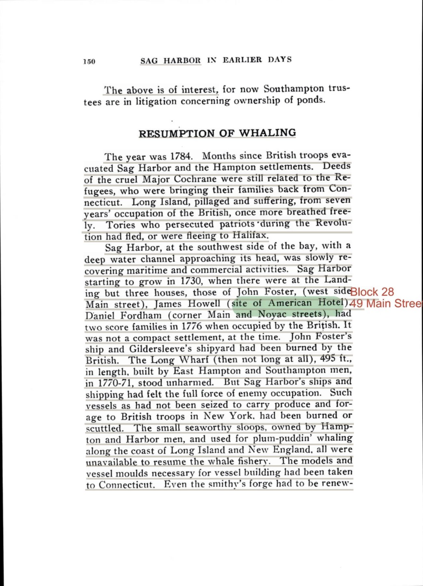
Sleight, Sag Harbor in Earlier Days, 1997, p. 37
Quotes drawn from this page: 2 3 4 5 16 18
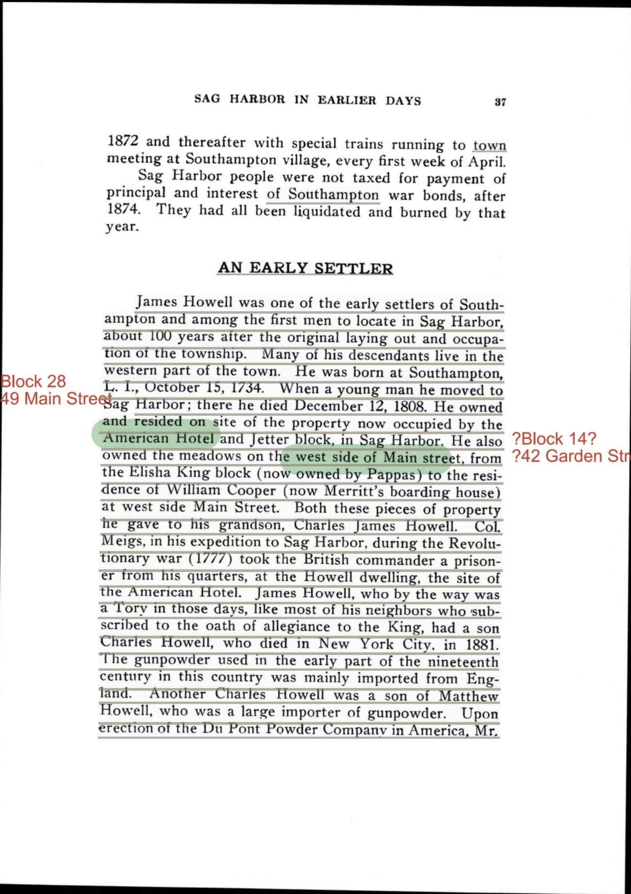
Sleight, Sag Harbor in Earlier Days, 1997, p. 48
Quotes drawn from this page: 6 7
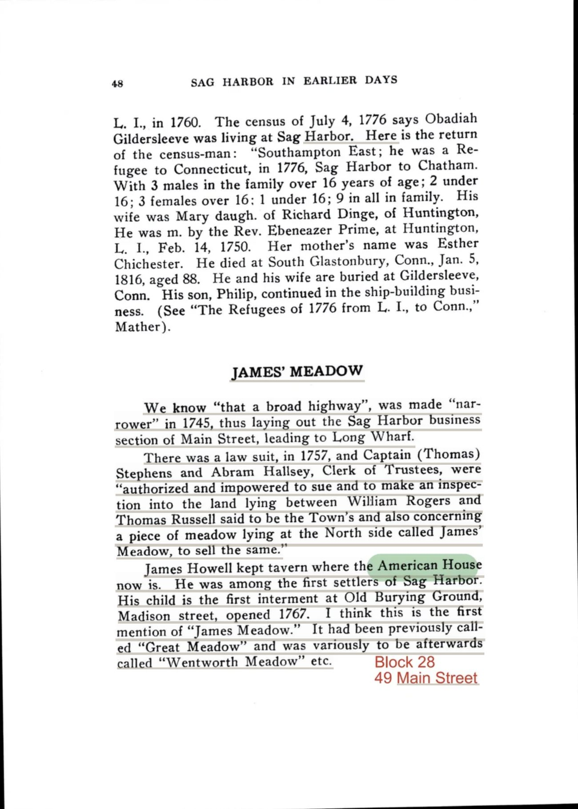
Weisburg & Donneson, Guide To Sag Harbor, 1975, p. 56
Quotes drawn from this page: 8 25

Zaykowski, Sag Harbor: The Story of an American Beauty, 1991, p. 196
Quotes drawn from this page: 9 10 22 23 35

Studenroth, Preserving Sag Harbor, 2023, p. 35
Quotes drawn from this page: 11 21 28 38 56 57
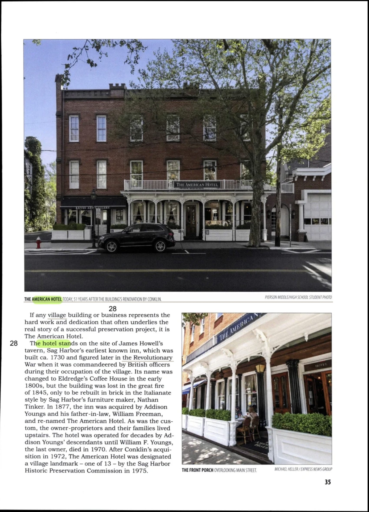
Zaykowski, Sag Harbor: The Story of an American Beauty, 1991, p. 58
Quotes drawn from this page: 12

Hedges, Early Sag Harbor, 1896, p. 21
Quotes drawn from this page: 13
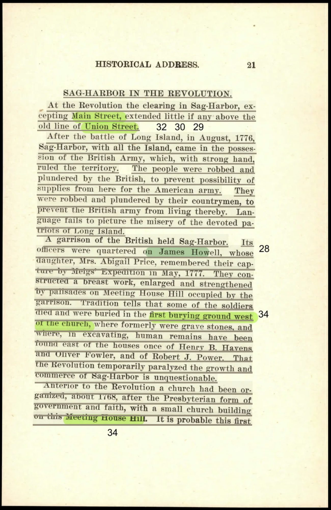
Zaykowski, Sag Harbor: The Story of an American Beauty, 1991, p. 59
Quotes drawn from this page: 15

Hedges, Early Sag Harbor, 1896, p. 22
Quotes drawn from this page: 17
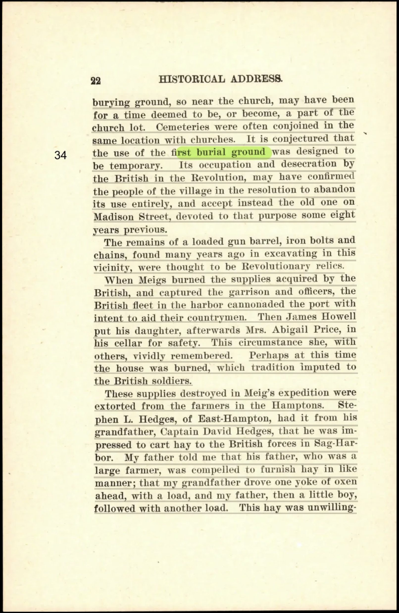
Roth, Images of America Sag Harbor, 2018, p. 32
Quotes drawn from this page: 24 27 33
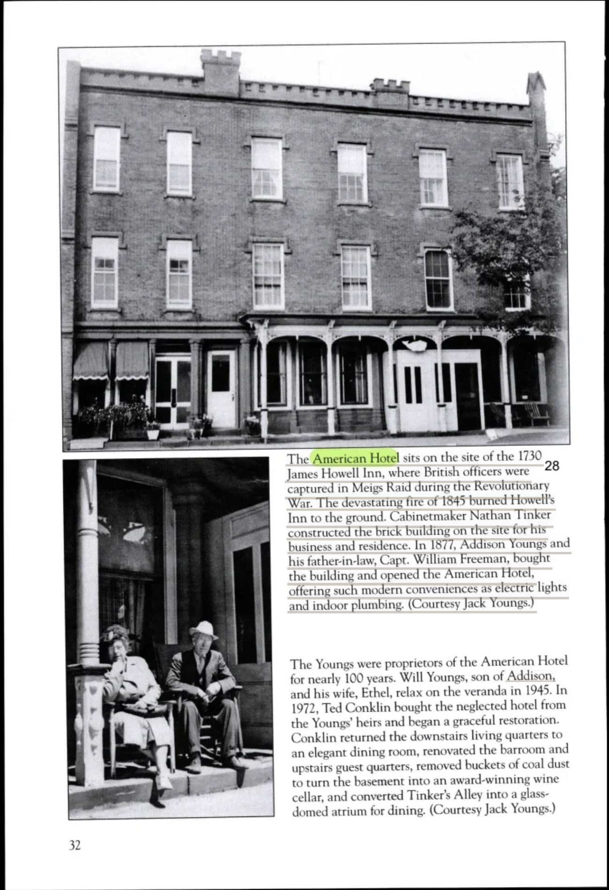
Zaykowski, Sag Harbor: The Story of an American Beauty, 1991, p. 120
Quotes drawn from this page: 26

Zaykowski, Sag Harbor: The Story of an American Beauty, 1991, p. 121
Quotes drawn from this page: 29 30 31

Eames, Oh That's Another Story, 2015, p. 61
Quotes drawn from this page: 32 39 40 41 42
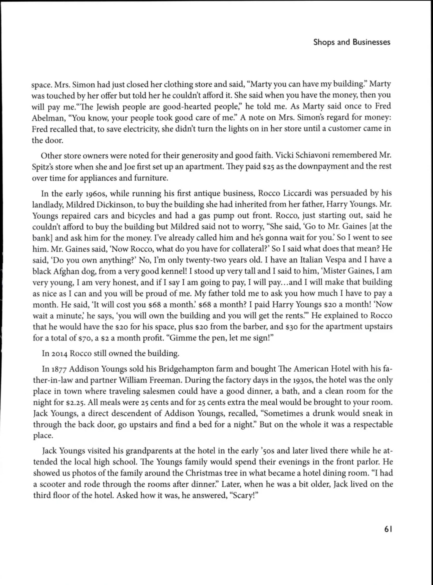
Roth, Images of America Sag Harbor, 2018, p. 20
Quotes drawn from this page: 36 37

Zaykowski, Sag Harbor: The Story of an American Beauty, 1991, p. 268
Quotes drawn from this page: 43

Weisburg & Donneson, Guide To Sag Harbor, 1975, p. 45
Quotes drawn from this page: 44
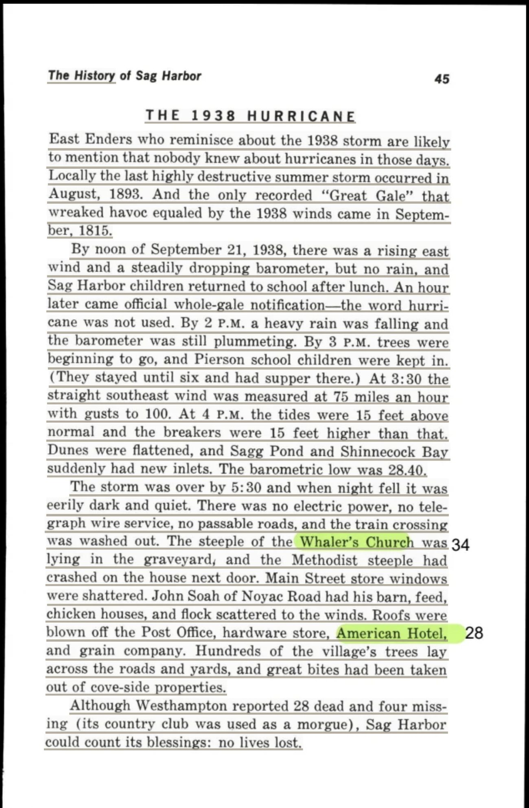
Eames, Oh That's Another Story, 2015, p. 63
Quotes drawn from this page: 47 48 49 50 54 55 58 59
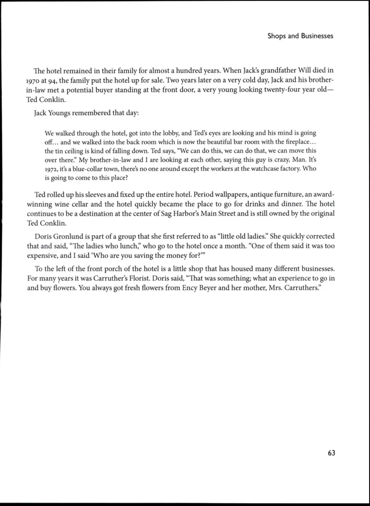
Studenroth, Preserving Sag Harbor, 2023, p. 34
Quotes drawn from this page: 51 52 53

Tobier, Voices of Sag Harbor, 2007, p. 271
Quotes drawn from this page: 60
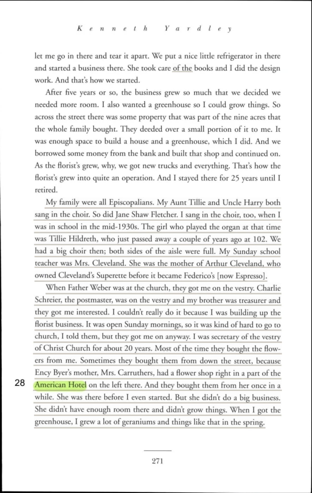
Longmire, Keeping Time in Sag Harbor, 2007, p. 142
Quotes drawn from this page: 62

Eames, Oh That's Another Story, 2015, p. 54
Quotes drawn from this page: 63

Tice, Sag Harbor Chamber of Commerce Visitors Guide, 2022, p. 12
Quotes drawn from this page: 64 65